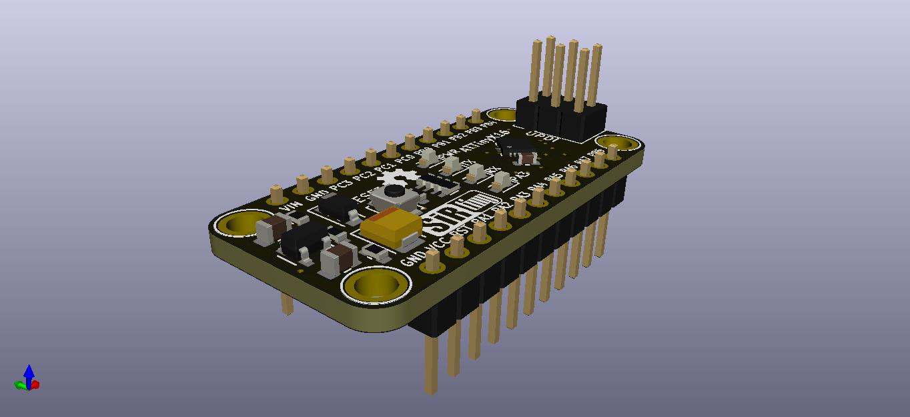

SirBoard is an open hardware library: SMD-to-THT breakout adapters for the packages that won't sit on 0.1″ pitch, development boards for the ATTiny, ATMega and ESP families, and a sensor line that all speaks the same 4-pin JST-SH connector. Routed in KiCad. Black soldermask, ENIG gold.

Each line used to be its own repository. They are now directories, with every commit that ever touched them carried across intact.
ATTiny development boards — the 85, and the modern 0/1-series in 12, 14, 16 and 17 pin variants.
USB-to-UART converters across seven controllers, so you can pick the one your driver stack already likes.
Wireless and GNSS carriers — ESP32 and ESP8266, plus four SIMCom GPS/GSM modules.
The flagship. Thirty-nine digital sensors and peripherals, every one on the same 4-pin 1.00 mm JST-SH footprint.
ATMega328PB and ATMega32U4 boards. The Nano ships in 1.8 V/4 MHz, 3.3 V/10 MHz and 5 V/20 MHz builds.
An ATMega1284P board that drops straight onto MightyCore, and a USBASP programmer to flash the rest of the shelf.
Storage and timekeeping — I²C and SPI FRAM, EEPROM, and two real-time clocks.
Bidirectional level shifting on the TXB0104/0108, and port expansion on the PCA9534 and TCA9548A.
Sixty hand-drawn SVG breadboard graphics — passives, connectors, crystals, battery holders, SD and QFN packages.
Twenty-one adapter footprints, most with two or more package variations per pin count — so a QFN16 at 0.5 mm and the same part at 0.65 mm both land on 0.1″ headers.
Every SirBlue board carries the same 4-pin 1.00 mm JST-SH connector and the same breadboard-friendly outline, so swapping an accelerometer for a time-of-flight ranger is a cable move, not a rewire.
| Part | Function | Bus | Driver library |
|---|---|---|---|
| BME280 | Humidity, pressure, temperature | I²C | Adafruit_BME280_Library |
| BME680 | Gas, humidity, pressure, temperature | I²C | Adafruit_BME680 |
| BMP280 | Barometric pressure | I²C | Adafruit_BMP280_Library |
| BNO055 | 9-DOF absolute orientation | I²C | Adafruit_BNO055 |
| ADXL345 | 3-axis accelerometer, ±16 g | I²C | Adafruit_ADXL345 |
| ADXL375 | 3-axis accelerometer, ±200 g | I²C | Adafruit_ADXL375 |
| LSM303 | Accelerometer + magnetometer | I²C | pololu/lsm303-arduino |
| LSM6DS33 | Accelerometer + gyroscope | I²C | pololu/lsm6-arduino |
| LIS3MDL | 3-axis magnetometer | I²C | Adafruit_LIS3MDL |
| LPS22HB | Barometric pressure | I²C | Adafruit_LPS2X |
| HTS221 | Humidity and temperature | I²C | stm32duino/HTS221 |
| APDS-9960 | Gesture, proximity, RGB light | I²C | Adafruit_APDS9960 |
| VL53L0X | Time-of-flight ranger, 2 m | I²C | Adafruit_VL53L0X |
| VL53L1X | Time-of-flight ranger, 4 m | I²C | pololu/vl53l1x-arduino |
| MAX3010X | Pulse oximetry, heart rate | I²C | SparkFun_MAX3010x |
| CCS811 | eCO₂ and TVOC air quality | I²C | Adafruit_CCS811 |
| SHT3XD | Humidity and temperature | I²C | Adafruit_SHT31 |
| MCP9808 | ±0.25 °C digital thermometer | I²C | Adafruit_MCP9808_Library |
| ADS1X15 | 16-bit ADC, 4 channel | I²C | Adafruit_ADS1X15 |
| MCP4725 | 12-bit DAC, 1 channel | I²C | Adafruit_MCP4725 |
| MCP4728 | 12-bit DAC, 4 channel | I²C | Adafruit_MCP4728 |
| MB85RCXXX | I²C FRAM, unlimited writes | I²C | Adafruit_FRAM_I2C |
| MB85RSXXX | SPI FRAM | SPI | Adafruit_FRAM_SPI |
| 24LCXXX | I²C EEPROM | I²C | blemasle/arduino-e24 |
| DS3231M | Real-time clock, TCXO | I²C | adafruit/RTClib |
| DS1307Z | Real-time clock | I²C | adafruit/RTClib |
| TCA9548 | 8-channel I²C multiplexer | I²C | RobTillaart/TCA9548 |
Full 39-part list, plus the Bosch IMUs and the remaining light sensors, in the sensor reference.
Every part on these boards is a standard part with a maintained driver already in the wild. SirBoard points at those libraries rather than forking them — a fork that sits still is a fork that rots, and ours had drifted up to 384 commits behind upstream before we retired them.
Adafruit, Pololu, SparkFun and Rob Tillaart between them cover the whole SirBlue line. Install from the Arduino Library Manager by name.
The microcontroller boards run on the established third-party cores rather than a SirBoard variant.
SirIoT carriers are wired to the module's own reference pinout, so the usual stacks work unmodified.
git clone https://github.com/vul-os/sirboard.git cd sirboard # open any design in KiCad — the project files sit next to the board kicad Boards/Microcontrollers/SirTiny/ATTinyX16/ATTinyX16.pro
Designs are MIT OR Apache-2.0. Fabricate them, modify them, sell the boards — commercially or otherwise, with no obligation to publish your changes.
Open source hardware. Every schematic, every board file and every footprint in this repository is published — not a rendering of a design you cannot edit.